Regra 1: O campo
O campo deve ser retangular e marcado com linhas laterais (entre 90 e 120 metros de comprimentos) e linhas de fundo (entre 64 e 75 metros de largura). Há uma linha de meio de campo, que o divide em duas metades e há também um círculo cujo raio mede 9,15 m.
Além disso, o campo deve ter prioritariamente da cor verde.
O campo compreende também:
Área de meta (em média tem 16,5 m de comprimento por 38 m de largura;
Área de penalti (9,15 m de distância da baliza);
Área de canto;
postes de bandeira (1,5 m de altura, no mínimo);
postes (7,32 metros de largura e 2,44 metros de altura).
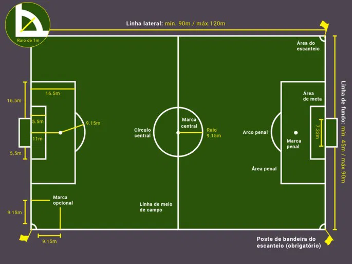
Regra 2: a bola
A bola deve ter as seguintes características:
ser esférica;
medir entre 68 cm e 70 cm de circunferência;
pesar entre 410 g e 450 g no início do jogo;
pressão equivalente a 0,6 - 1,1 atmosferas (600 - 1.100 g/cm²) ao nível do mar.
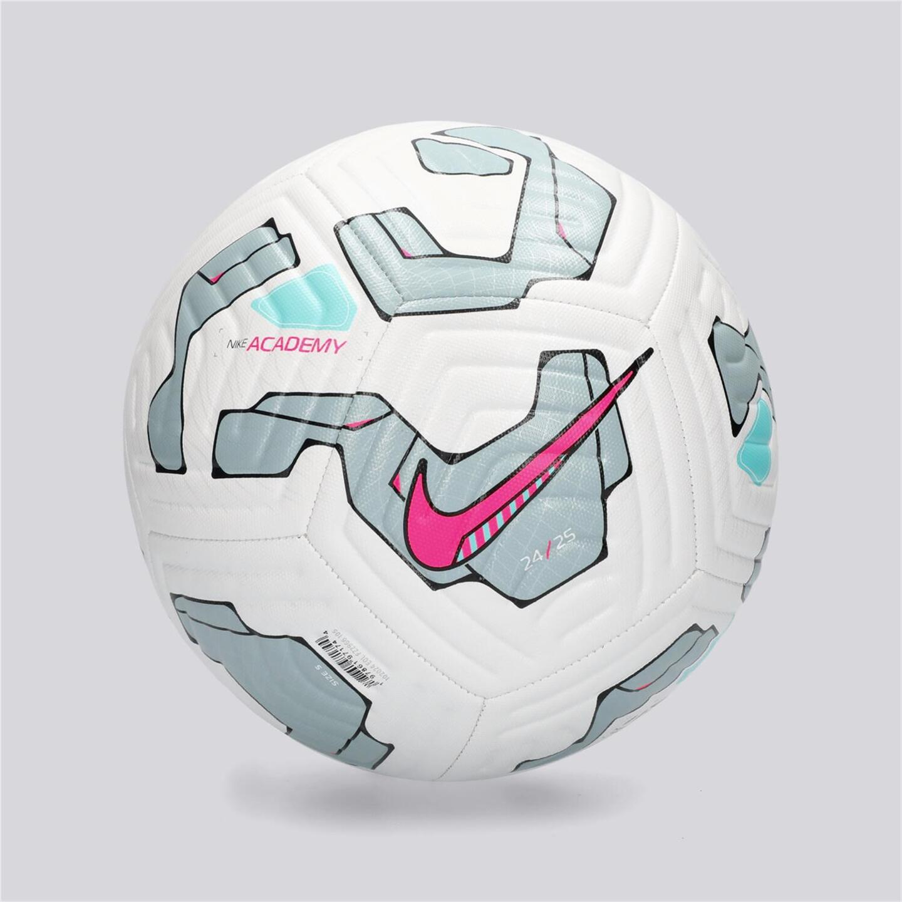
Regra 3: os jogadores
As equipes são compostas por 11 jogadores, incluindo 1 guarda-redes, a quantidade de, defesas, médios e avnaçados, varia com forme o esquema tático que o treinador decidir usar. Entre os jogadores, um é o capitão, sendo responsável pela conduta da sua equipe.
Ao longo do jogo, 5 jogadores podem ser substituídos. Atualmente, uma 6ª substituição pode ser feita em caso de um jogador sofrer uma concussão (um trauma na cabeça).
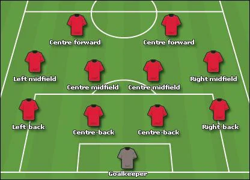
Regra 4: equipamento
O equipamento obrigatório é composto por:
camiseta com manga;
calções (o guarda-redes pode usar calças);
meias;
caneleiras, colocadas por baixo das meias;
chuteira.
Além dos equipamentos obrigatórios, é permitido usar equipamentos de proteção, como protetores de cabeça, máscaras faciais, joelheiras, cotoveleiras e camisas térmicas. Esses equipamentos complementares devem ser prioritariamente da mesma cor que o equipamento.
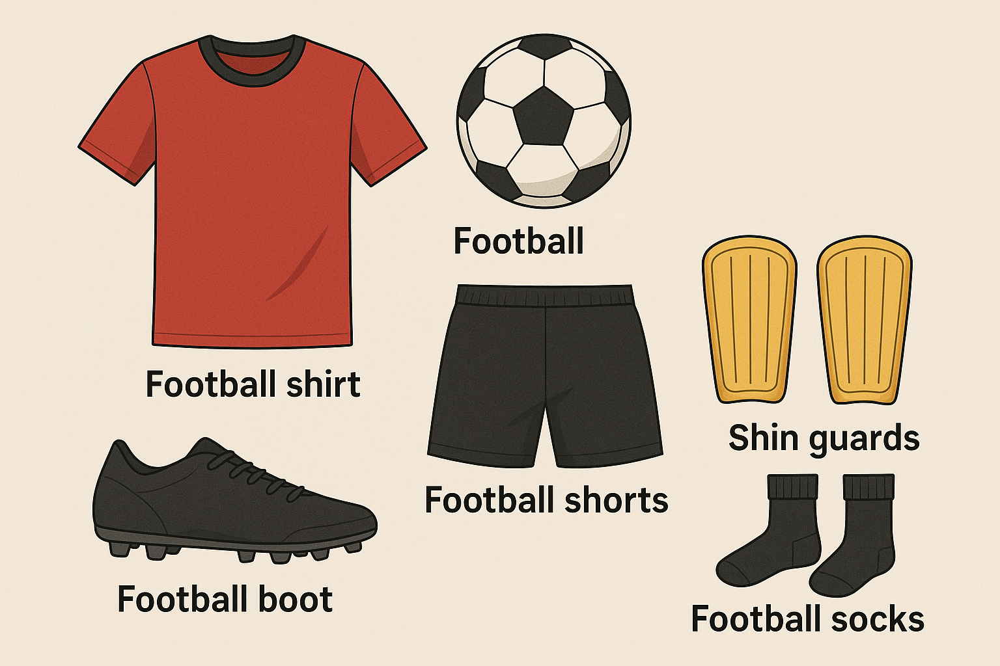
Regra 5: o árbitro
O árbitro de futebol é a maior autoridade em campo. É ele quem pode mostrar os cartões amarelos e vermelhos aos jogadores.
Os principais poderes e deveres do árbitro são:
fazer que as regras do jogo sejam cumpridas;
controlar o jogo com a ajuda dos outros membros da equipe de arbitragem;
cronometrar e supervisionar o jogo.
Os equipamentos obrigatórios usados pelo árbitro são:
apito;
cronômetro;
cartões amarelo e vermelho;
bloco de notas ou outro meio para registrar as ocorrências do jogo.
Além dos equipamentos obrigatórios, os árbitros também podem usar: equipamento para se comunicar com outros membros da equipe de arbitragem e equipamento de monitoramento do condicionamento físico.
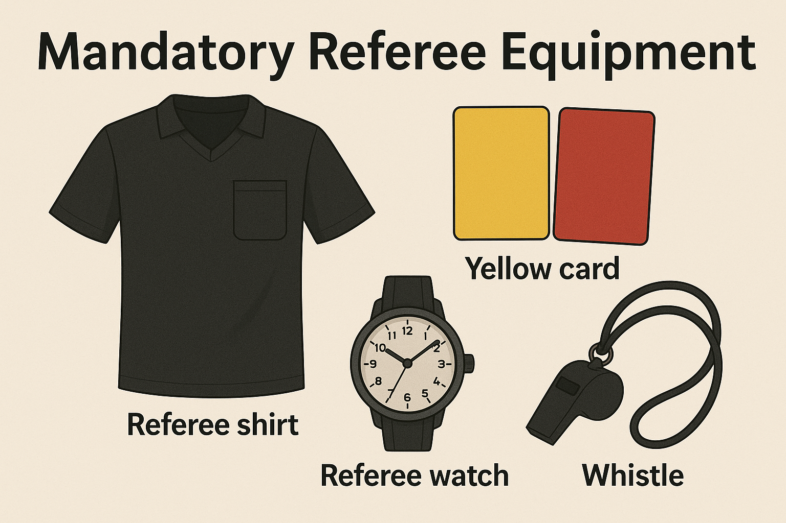
Regra 6: os outros membros da equipe de arbitragem
O jogo de futebol para além do árbitro normal tem:
Dois árbitros assistentes;
Um quarto árbitro;
Dois árbitros assistentes adicionais;
Um árbitro assistente reserva;
Um árbitro assistente de vídeo (VAR) e, pelo menos, um assistente do VAR.
Árbitros assistentes
Os árbitros assistentes têm a tarefa de indicar quando a bola sai do campo, qual equipe tocou por último na bola, ou quando uma substituição é solicitada.
Quarto árbitro
O quarto árbitro é responsável por verificar o equipamento dos jogadores e por realizar oficialmente as substituições dos jogadores suplentes pelos titulares.
Árbitros assistentes adicionais
Os árbitros assistentes adicionais auxiliam o quarto árbitro e, caso seja necessário, podem substituir o quarto árbitro ou os árbitros.
Árbitro assistente reserva
O árbitro assistente reserva pode substituir um árbitro assistente, o quarto árbitro ou um árbitro assistente adicional.
Árbitro assistente de vídeo (VAR)
O árbitro assistente de vídeo auxilia o árbitro a tomar uma decisão relacionada a gols e cartões vermelhos.
O assistente do VAR
O assistente do VAR auxilia o árbitro assistente de vídeo assistindo às imagens de televisão, no momento em que o árbitro assistente de vídeo está ocupado com uma checagem, e registrando o tempo “perdido” numa checagem.
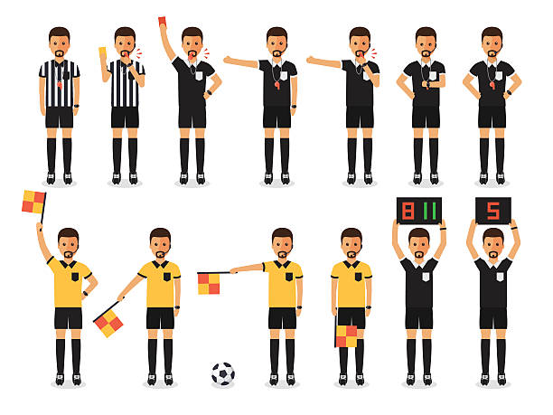
Regra 7: a duração do jogo
Um jogo de futebol é disputado com duas partes de 45 minutos. Entre as duas partes, há um intervalo de 15 minutos.
O tempo pode ser prolongado para compensar o tempo “perdido”, por exemplo, em decorrência de substituições, sanções disciplinares, retirada de um jogador lesionado e comemoração de golos.
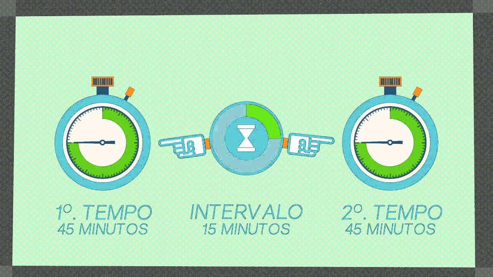
Regra 8: o início e o reinício de jogo
O início do jogo dá se com o pontapé de saída, enquanto o reinício dá se após cada golo marcado, bem como nos pontapés livres, penaltis, lançamentos laterais, pontapés de baliza e cantos.
O jogo começa com um pontapé inicial na bola colocada no centro do campo, após o apito do árbitro. Quando um golo é marcado, a equipa que sofreu o golo reinicia o jogo com um pontapé de saída no centro do campo. Em ambas as situações, todos os jogadores de cada equipa devem estar na sua metade do campo.
Regra 9: a bola em jogo e fora de jogo
A bola está fora de jogo quando, por exemplo, atravessa completamente as linhas laterais e de fundo do campo ou quando o jogo é paralisado pelo árbitro.
A bola está em jogo quando toca em um membro da arbitragem, nos postes, no travessão ou nas bandeira do canto e permanece dentro no campo.

Regra 10: a determinação do resultado de um jogo
A equipe que tiver marcado mais golos vence o jogo. Se as duas equipes marcarem o mesmo número de golos, o jogo fica empatado, podendo ser desempatado através de um prolongamento (mais duas partes, quinze minutos cada parte, mais possível tempo de acréscimo) e se ainda assim continuar empatado vão a penaltis.
Nos penaltis, cada equipa deve bater 5 penaltis, alternando-se entre si. Se o empate se mantiver, os penaltis continuam até que uma das equipas marque um golo a mais do que a outra, depois de ter executado o mesmo número de penaltis.

Regra 11: o fora de jogo
O fora de jogo acontece quando qualquer parte de um jogador (com exceção dos braços e mãos) está mais perto da linha do golo adversário do que a bola e o penúltimo adversário no momento em que a bola é passada para ele.
O fora de jogo não é considerado uma infração. Além disso, o fora de jogo só acontece quando o jogador está no meio-campo ofensivo (meio-campo do adversário).
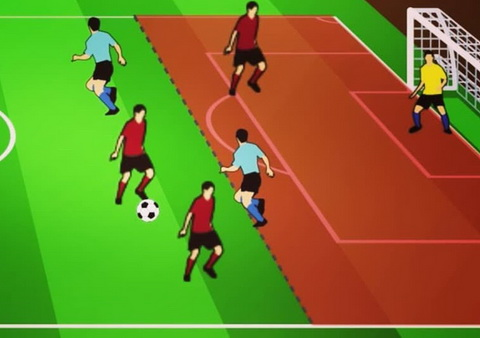
Regra 12: as faltas e condutas incorretas
No futebol, são consideradas infrações:
Segurar, empurrar e saltar em cima de um adversário;
Chutar e fazer tropeçar ou tentar chutar e tentar fazer tropeçar um adversário;
Morder ou cuspir em alguém;
Tocar na bola com a mão ou com o braço;
Fazer ofensas verbais e usar linguagem ofensiva, insultante ou abusiva.
Os cartões amarelos são usados para fazer advertências, enquanto os cartões vermelhos são usados para fazer expulsões.
Um jogador pode receber cartão amarelo se:
Atrasar o início do jogo;
Desaprovar as decisões do árbitro através de palavras ou atitudes;
Entrar e sair do campo de jogo sem a autorização do árbitro;
Entrar na área de revisão do árbitro (ARA);
simular que sofreu uma falta.
Os gols podem ser comemorados, mas os jogadores poderão ser advertidos com cartão amarelo, por exemplo, se:
Agirem de forma provocativa ou debochada;
Cobrirem a cabeça ou o rosto com uma máscara, ou item similar;
Tirarem a camisola ou usá-la para cobrir a cabeça.
Um jogador pode receber cartão vermelho se:
Tocar na bola com a mão ou o braço para impedir que a equipa adversária faça golo;
Apresentar conduta violenta;
Receber dois cartões amarelos no mesmo jogo;
Entrar na sala de operação de vídeo (VOR).
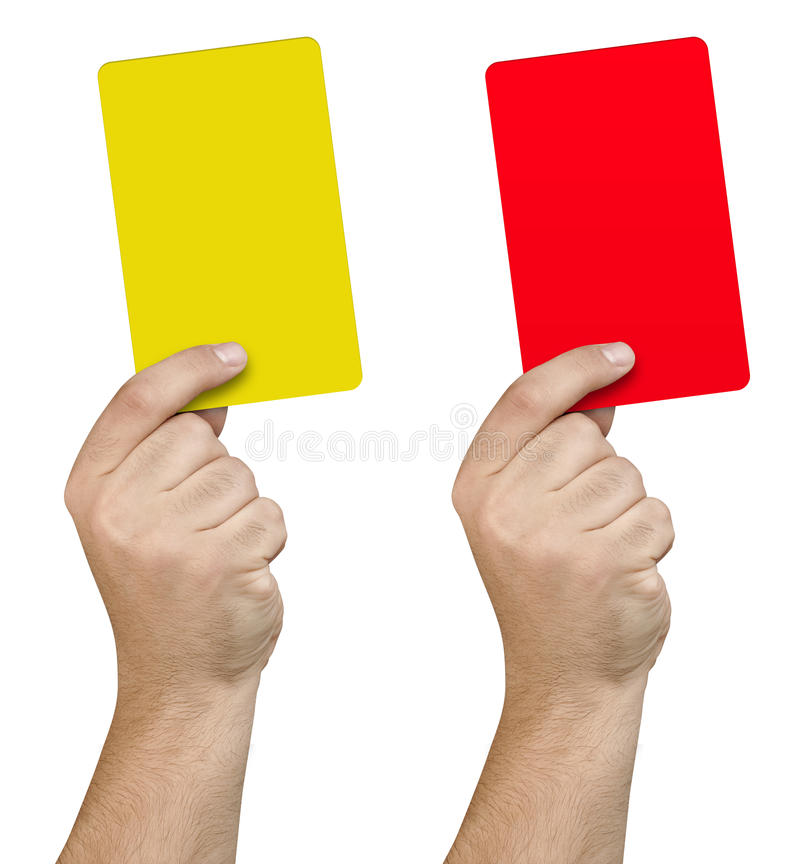
Regra 13: os pontapés livres
Os pontapés livres são concedidos à equipa adversária que cometeu uma infração. Há dois tipos de pontapés livres: diretos, depois de uma infração grave, e indiretos, depois de uma infração menos grave.
Geralmente, os pontapés livres são executados no local onde ocorreu a infração. Antes de executado, os adversários devem ficar a, pelo menos, 9,15 metros de distância da bola. Quando os jogadores da equipa defensora formarem uma barreira, os jogadores da equipe atacante devem ficar a, pelo menos, 1 metro da barreira até que o pontapé livre seja batido.
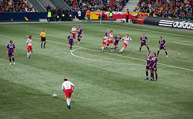
Regra 14: o penalti
Um pênalti é dado quando um jogador cometer uma infração punível com um pontapé livre direto dentro da própria área penal.
Com exceção do batedor e do guarda-redes, os jogadores devem ficar a, pelo menos, 9,15 metros de distância da marca penal (fora da área). O penalti só pode ser cobrado após o apito do árbitro.
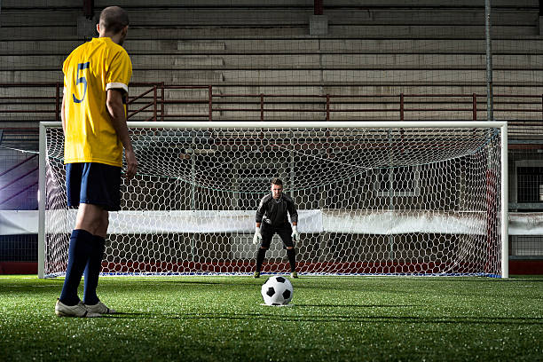
Regra 15: o lançamento lateral
O lançamento lateral é concedido à equipa adversária da que tocou por último na bola antes de ela ter saído do campo pelas linhas laterais.
No momento de lançar a bola, o jogador deve estar de pé e de frente para o campo, no ponto em que a bola saiu de jogo. Além disso, a bola deve ser lançada com as duas mãos, sendo passada por trás da cabeça e por cima dela.
Os jogadores adversários devem manter uma distância de 2 metros do ponto de lançamento.
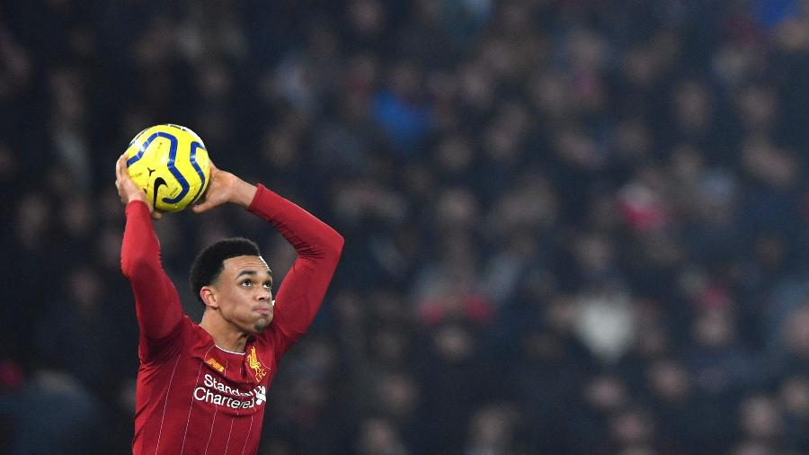
Regra 16: o pontapé de baliza
O pontapé de baliza é concedido quando a bola ultrapassar a linha de fundo, depois de ter tocado pela última vez em um jogador da equipe atacante.
No momento de chutar a bola, o jogador deve estar no interior da área de meta (pequena área). Os jogadores adversários devem ficar fora da área penal (grande área) até que a bola esteja em jogo.

Regra 17: o canto
O canto é concedido quando a bola ultrapassar a linha de fundo, depois de ter tocado pela última vez em um jogador da equipa que estava a defender.
No momento de chutar a bola, ela deve estar na área de canto mais próxima do ponto em que ultrapassou a linha de fundo. Os jogadores adversários devem ficar a, pelo menos, 9,15 metros do quarto de círculo do canto até que a bola esteja em jogo.
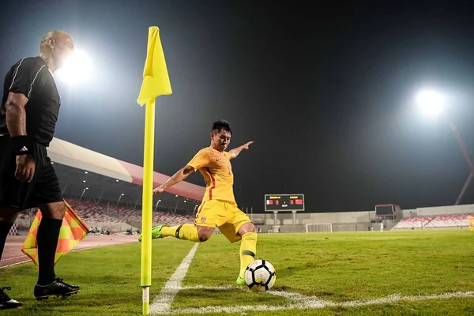